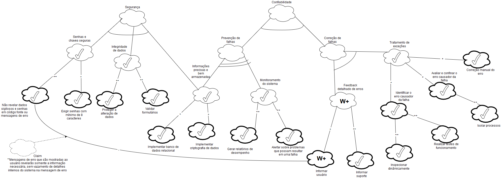
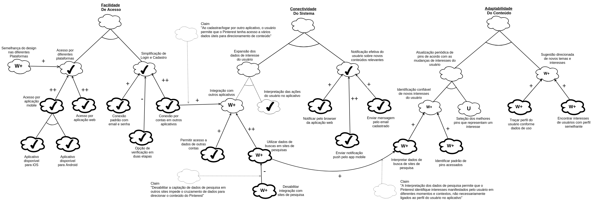
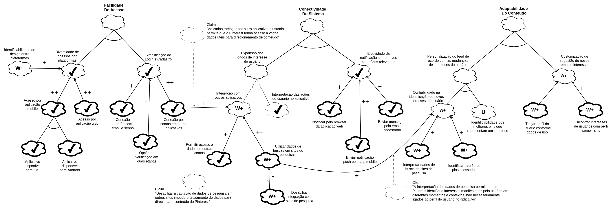
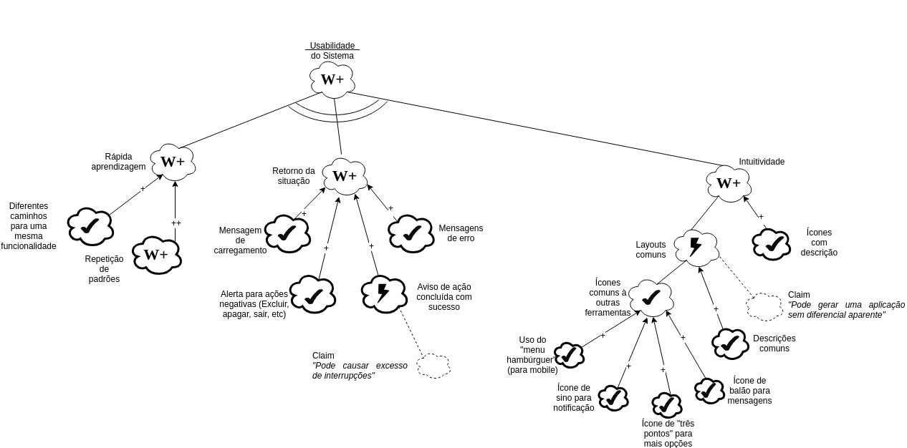
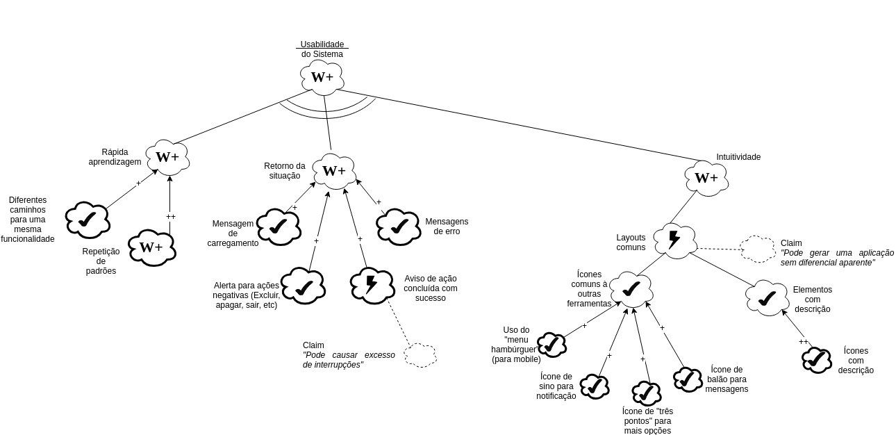
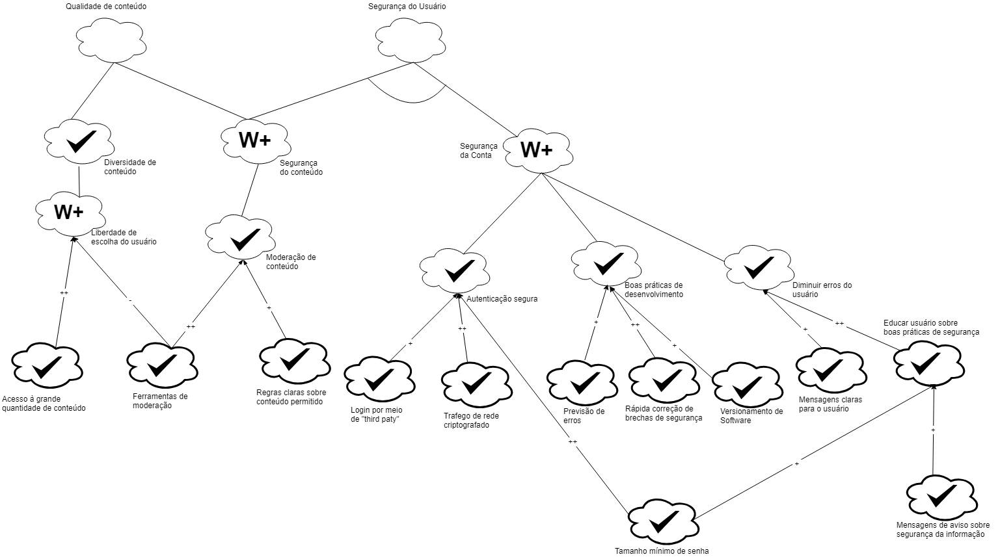
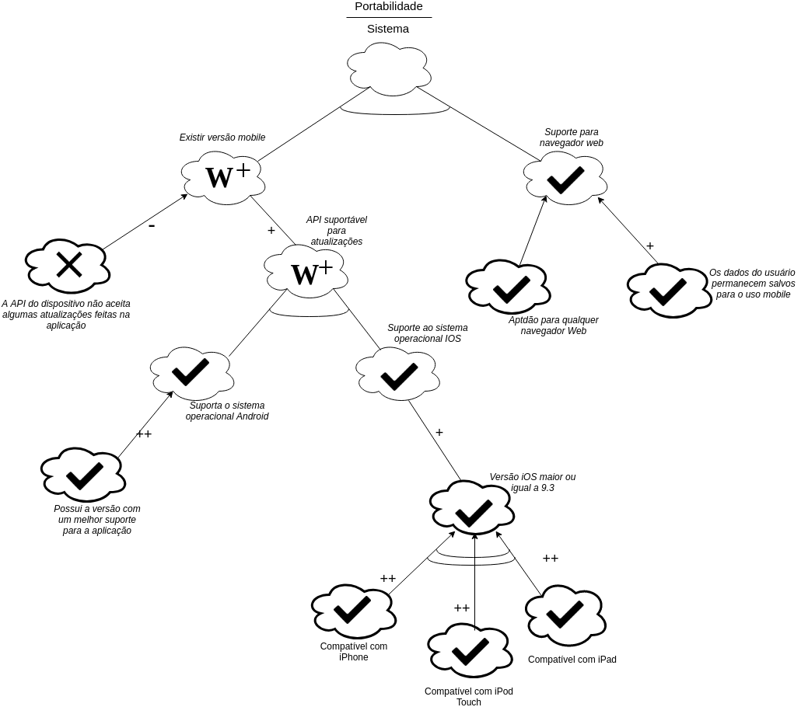

| Versão | Data | Modificação | Autor |
|---|---|---|---|
| 1.0 | 14/10/2018 | Adição da primeira versão do NFR1 | Geovana Ramos |
| 1.1 | 15/10/2018 | Adição da primeira versão do NFR2 | Alexandre Miguel |
| 1.2 | 16/10/2018 | Adição da primeira versão do NFR3 | Gabriela Medeiros |
| 1.3 | 16/10/2018 | Adição da primeira versão do NFR5 | Joberth Rogers |
| 1.4 | 16/10/2018 | Adição da primeira versão do NFR6 | Daniel Maike |
| 1.5 | 17/10/2018 | Adição da primeira versão do NFR8 | Letícia Meneses |
| 1.6 | 17/10/2018 | Adição da primeira versão do NFR7 | Guilherme Guy |
| 1.7 | 17/10/2018 | Adição da primeira versão do NFR4 | Helena Goulart |
| 2.0 | 17/10/2018 | Adição da segunda versão do NFR8, após avaliação com os professores, com alteração nos impactos | Letícia Meneses |
| 2.1 | 17/10/2018 | Adição da segunda versão do NFR4, após avaliação com os professores, com alteração nos impactos | Helena Goulart |
| 2.2 | 17/10/2018 | Adição da segunda versão do NFR6, após avaliação com os professores, com reformulação das operacionalizações | Daniel Maike |
| 2.3 | 17/10/2018 | Adição da terceira versão do NFR6, com reconstrução do modelo no diagrama | Daniel Maike |
| 2.4 | 20/10/2018 | Adição da segunda versão do NFR1, após avaliação com os professores, com reformulação das decomposições | Geovana Ramos |
| 2.5 | 20/10/2018 | Adição da segunda versão do NFR7, com novos níveis de decomposição | Guilherme Guy |
| 2.6 | 20/10/2018 | Adição da segunda versão do NFR5, após avaliação dos professores, com adição de softgoals | Joberth Rogers |
| 2.7 | 13/11/2018 | Adição da segunda versão do NFR2, após inserção de adaptabilidade | Alexandre Miguel |
| 3.0 | 16/11/2018 | Adição da terceira versão do NFR7, após análise do modelo | Guilherme Guy |
| 3.1 | 16/11/2018 | Adição da segunda versão do NFR3, após análise do modelo | Gabriela Medeiros |
| 3.2 | 17/11/2018 | Adição da terceira versão do NFR3, após análise do modelo | Gabriela Medeiros |
| 3.3 | 17/11/2018 | Adição da terceira versão do NFR8, após análise do modelo | Letícia Meneses |
| 3.4 | 17/11/2018 | Adição da terceira versão do NFR1, após análise do modelo | Geovana Ramos |
| 3.5 | 18/11/2018 | Adição da terceira versão do NFR1, após análise do modelo | Alexandre Miguel |
| 3.6 | 18/11/2018 | Adição da terceira versão do NFR5, após análise do modelo | Joberth Rogers |
| 3.7 | 18/11/2018 | Adição da terceira versão do NFR4, após análise do modelo | Helena Goulart |
Introdução
O NFR é um framework orientado a processos que procura evidenciar os requisitos não funcionais de um sistema, por meio de metas a serem atingidas.
NFR1 - Confiabilidade
Versão 1.0

Versão 2.0

Versão 3.0

NFR2 - Conectividade
Versão 1.0

Versão 2.0

Versão 3.0

NFR3 - Usabilidade
Versão 1.0

Versão 2.0

Versão 3.0

NFR4 - Usabilidade - Design
Versão 1.0

Versão 2.0

Versão 3.0

NFR5 - Desempenho
Versão 1.0

Versão 2.0

Versão 3.0

NFR6 - Suporte
Versão 1.0

Versão 2.0

Versão 3.0

NFR7 - Segurança
Versão 1.0

Versão 2.0

Versão 3.0
Na versão 3.0 foi adicionado um olhar para a qualidade de conteúdo, além de melhorar o NFR anterior.

NFR8 - Portabilidade
Versão 1.0

Versão 2.0

Versão 3.0
